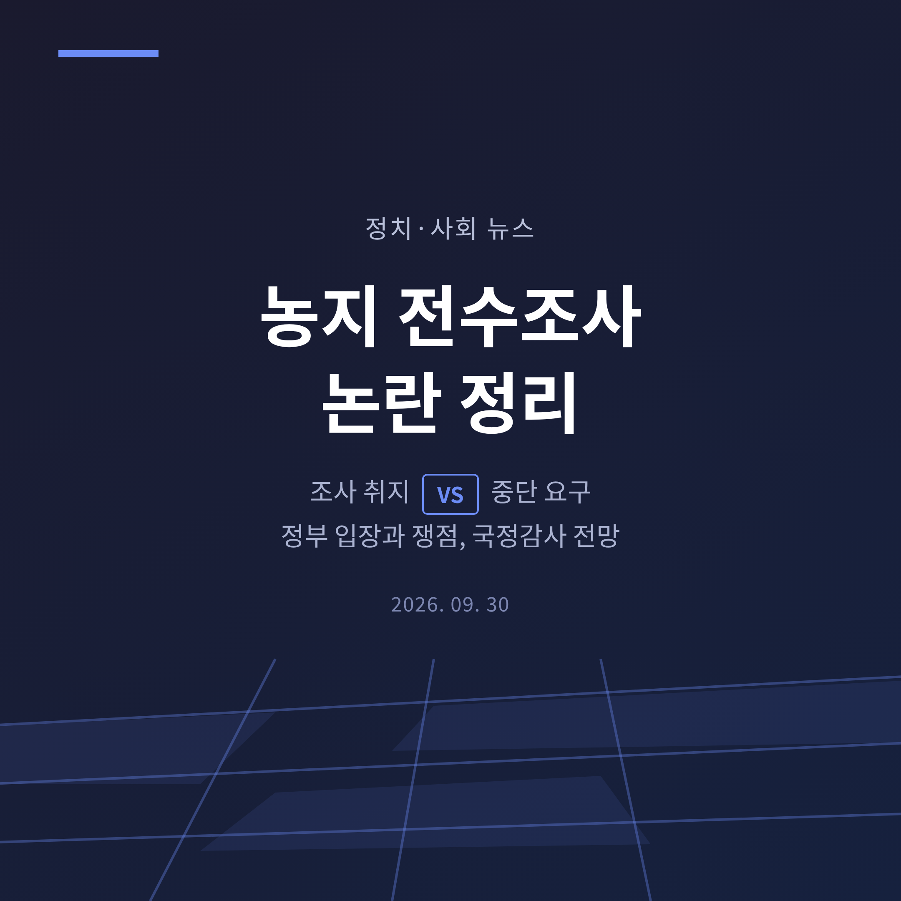
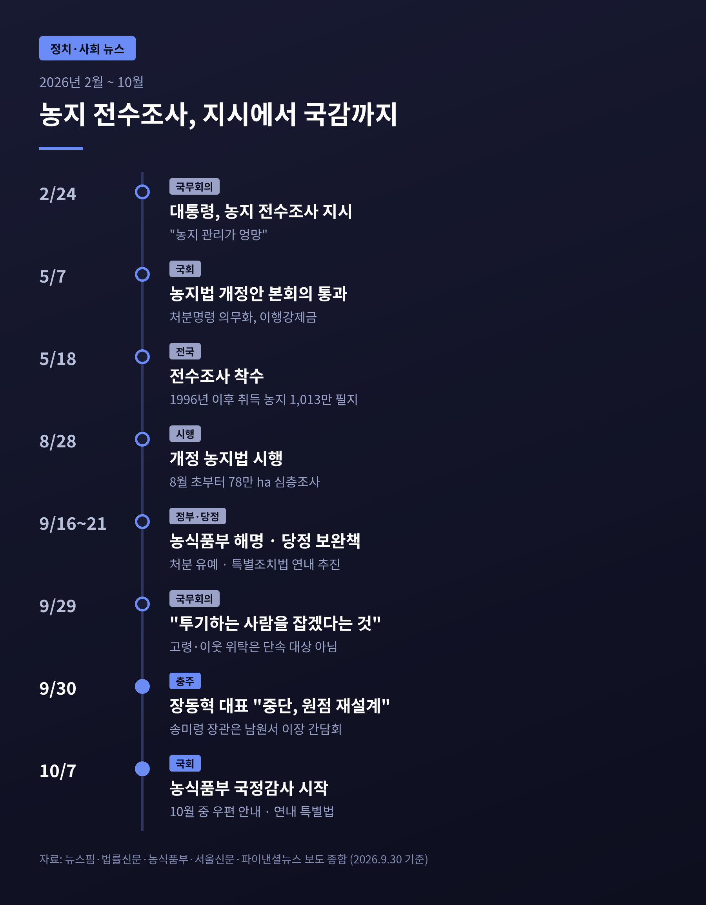
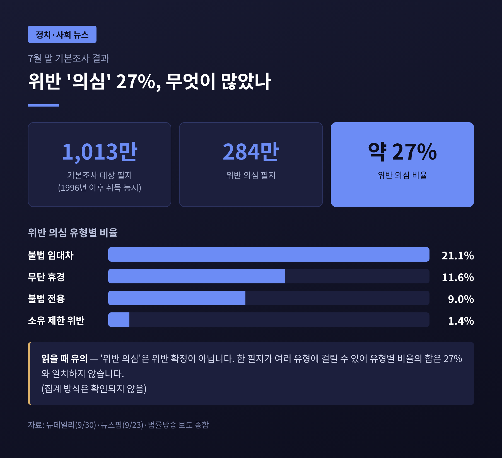
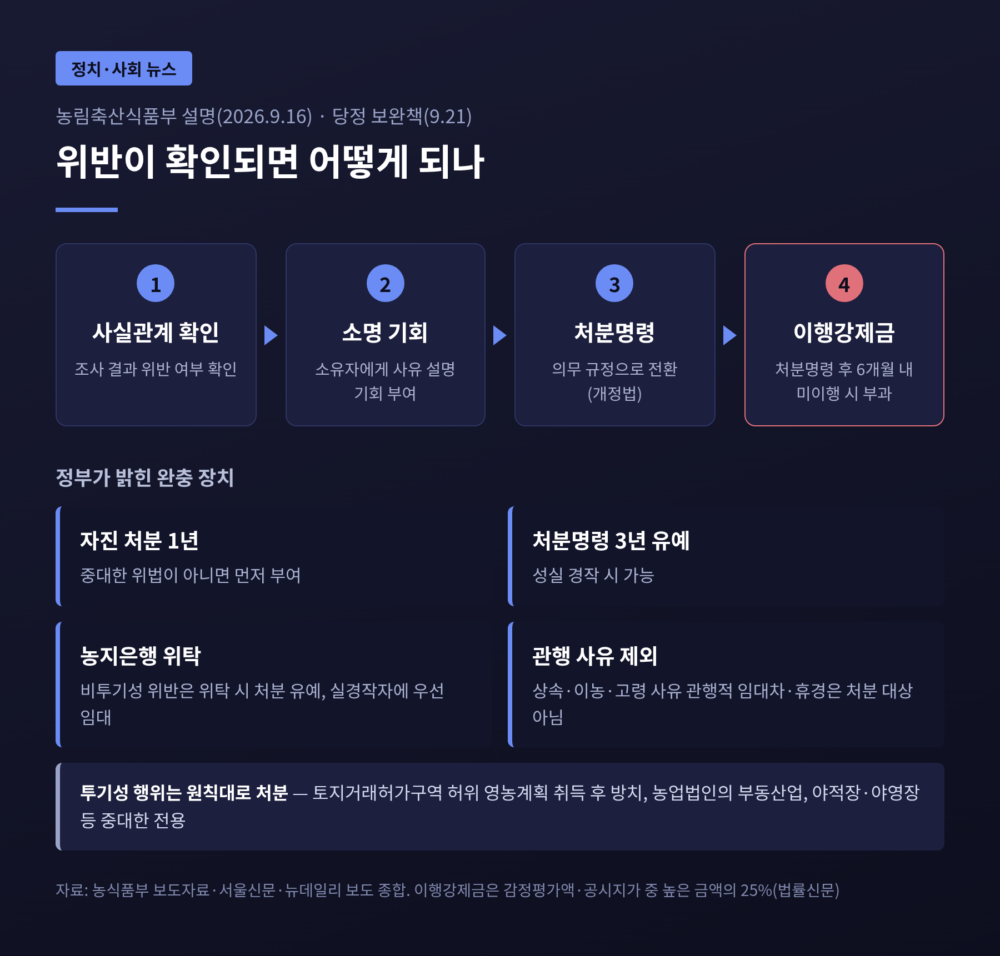
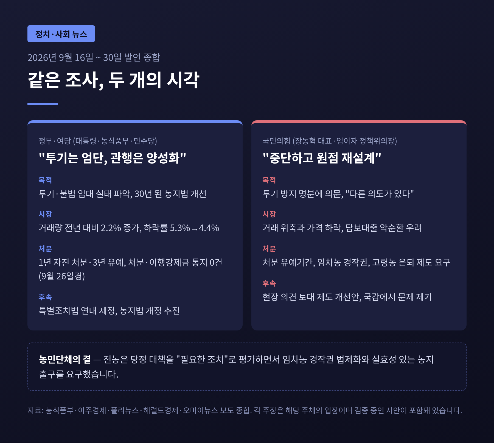
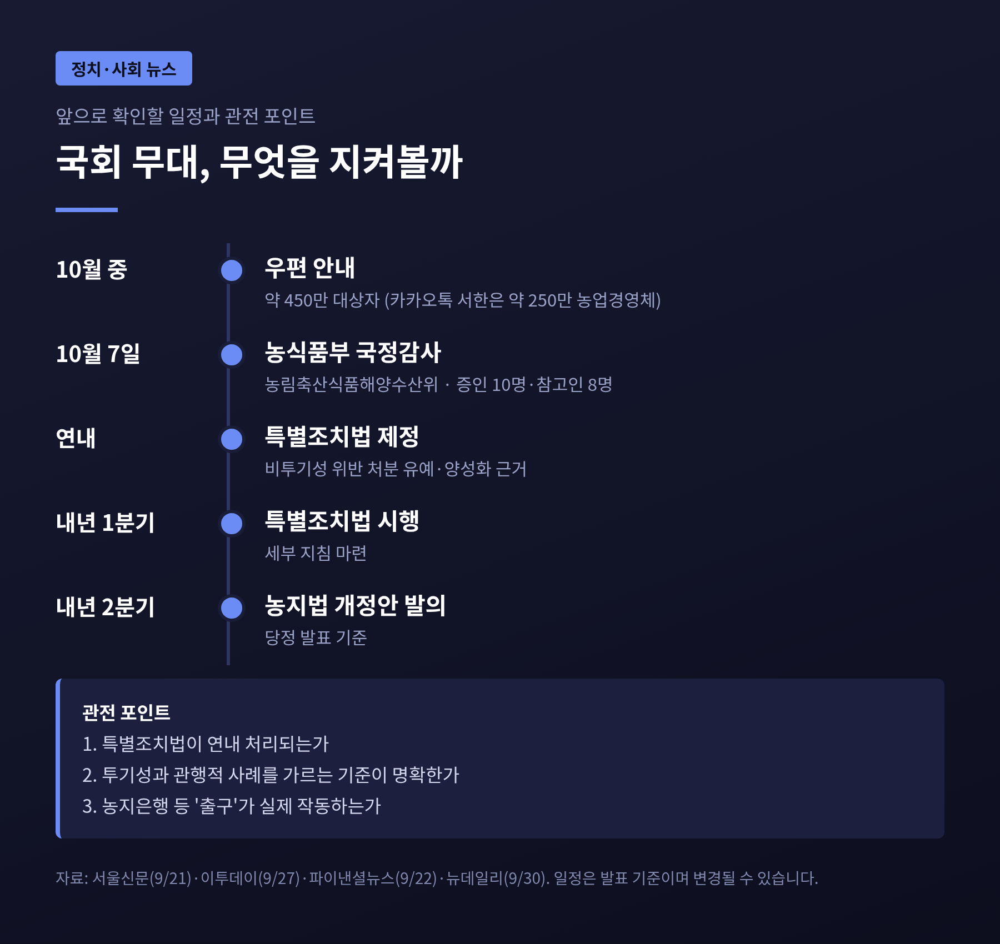

이번 글에서는 정부의 농지 전수조사를 둘러싼 논란을 정리해 보겠습니다.
9월 30일 국민의힘 장동혁 대표가 충북 충주 농업 현장에서 조사 중단을 요구했고, 정부와 여당은 투기만 겨냥한 조사라고 맞서고 있습니다.
여야 주장과 정부 공식 입장, 농민 반응을 나란히 놓고 무엇이 쟁점인지 살펴봅니다.
3줄 요약
장 대표는 9월 30일 충북 충주시 용두동 일대 농지와 농협하나로마트 탄금점을 찾아 농민들과 간담회를 열었습니다.
임이자 정책위의장, 이종배 의원이 동행했습니다.
장 대표는 이재명 대통령이 "이해하기 어려울 정도로 농지 전수조사에 집착하고 있다"고 말했습니다.
"특정 세력을 위한 의도가 아니라면 이런 일을 벌일 이유가 없다"는 취지의 발언도 이어졌습니다.
언론 보도에 따르면 요구 사항은 세 가지로 요약됩니다. 조사 즉시 중단, 농민 의견 수렴, 원점 재설계입니다.
그가 든 논거도 구체적이었습니다.
투기 방지가 목적이라면 값이 오르는 지역을 집중 단속하면 충분하다는 것이 첫째입니다.
전국 농지 정보가 데이터로 쌓이면 "농지 사냥이 가능해진다"는 우려가 둘째입니다.
이행강제금이 부과되면 농지가격이 내려가고, 담보대출이 어려워지는 악순환이 온다는 것이 셋째입니다.
대통령이 언급한 휴경지 태양광 활용에 대해서도 경자유전 원칙과 어떤 관계인지 이해하기 어렵다고 했습니다.
임 정책위의장은 "투기꾼 막겠다고 평생 농사지은 농민까지 투기꾼 취급하면 안 된다"고 거들었습니다.
처분 유예 기간, 임차농 경작권 보호, 고령농 은퇴 제도 마련도 요구했습니다.

이 사안이 정치 쟁점으로 커진 이유는 농지가 단순한 땅이 아니기 때문입니다.
현장 농민들은 농지를 노후 자산이자 대출 담보로 봅니다.
충주 간담회에서 나온 "나이가 들면 땅을 파는 게 노령 연금"이라는 말이 그런 현실을 보여줍니다.
정부 처지에서는 경자유전, 즉 농사짓는 사람이 농지를 소유한다는 헌법 원칙을 30년 만에 실제로 점검하는 일입니다.
이 대통령은 9월 23일 뉴욕에서 엑스(X)에 글을 올려 "농지투기 방지와 제대로 된 농지활용을 위해 농지 전수조사는 꼭 필요하다"고 밝혔습니다.
"저항과 반발 때문에 모든 정부가 회피했지만 저는 회피하지 않겠다"는 문장도 함께였습니다.
같은 글에서 대통령은 "농사를 짓다 고령으로 못 짓는 경우나 상속받은 농지는 대상이 아니다"라고 선을 그었습니다.
투기 목적이 아닌 경우를 보호하겠다는 뜻입니다.
결국 논쟁의 핵심은 조사의 필요성보다 "어디까지가 투기이고 어디까지가 관행인가"에 있습니다.
추석 연휴와 겹친 것도 파장을 키웠습니다.
언론 보도를 종합하면 명절 밥상에서 농지 얘기가 화제가 됐고, 당정청이 유튜브와 SNS까지 동원해 해명에 나섰지만 현장 반응은 차가웠다는 평가가 나옵니다.
정부 발표를 종합하면 흐름은 이렇습니다.
이 대통령이 2월 24일 국무회의에서 "농지 관리가 엉망"이라며 전수조사를 지시했습니다.
5월 7일 국회가 농지법 개정안을 통과시켰고, 조사는 5월 18일 시작됐습니다. 개정법은 8월 28일 시행됐습니다.
기본조사 대상은 1996년 농지법 시행 이후 취득한 농지 1,013만 필지입니다.
7월 말 결과 약 27%, 284만 필지가 '위반 의심'으로 분류됐습니다.
유형별로는 불법 임대차 21.1%, 무단 휴경 11.6%, 불법 전용 9%, 소유 제한 위반 1.4%입니다.
한 필지가 여러 유형에 걸칠 수 있어 비율을 단순히 더한 값이 27%와 맞지 않는다는 점은 감안해야 합니다. 이 부분의 집계 방식은 확인되지 않았습니다.
정부 브리핑에 따르면 8월부터는 수도권, 토지거래허가구역 등 고위험군 농지 78만 ha를 대상으로 현장조사와 보완조사를 병행하는 심층조사가 진행 중입니다.
국립농산물품질관리원이 처음 참여했고, 드론과 위성사진도 활용됩니다.
여기서 눈여겨볼 대목이 있습니다.
'위반 의심'은 위반 확정과 다릅니다.
정부도 이 숫자가 곧바로 처분 대상이라는 뜻은 아니라고 설명합니다.

농림축산식품부는 9월 16일 개정 농지법과 전수조사에 관한 설명 자료를 냈습니다.
핵심은 처분명령이 '의무 규정'으로 바뀐 것이지 위반 농지를 모두 즉시 처분하라는 뜻은 아니라는 점입니다.
농지 시장에 대해서도 반론을 폈습니다.
2026년 농지 거래량은 전년 동기보다 2.2% 늘었고, 가격 하락률은 2025년 5.3%에서 2026년 4.4%로 둔화됐다는 것입니다.
송미령 장관과 이영수 농림축산비서관은 9월 26일 무렵 "농지 처분 통지나 이행강제금은 단 한 건도 나가지 않았다"고 밝혔습니다.
송 장관은 9월 30일 전북 남원에서 이장들과 만나 "이번 전수조사는 농업인을 적발하고 처분하기 위한 것이 아니다"라고 말했습니다.
당정은 9월 21일 보완책도 내놓았습니다.
일정은 특별조치법을 연내 제정해 내년 1분기에 시행하고, 농지법 개정안은 내년 2분기에 발의한다는 것입니다.
농식품부는 9월 28일 자 송 장관 명의 서한을 카카오톡으로 약 250만 농업경영체에 보내기로 했고, 10월 중 약 450만 대상자에게 우편 발송을 예고했습니다.
권칠승 민주당 정책위의장은 9월 27일 조사로 인한 불편에 대해 "매우 죄송스럽게 생각한다"고 밝히기도 했습니다.

두 진영은 같은 사실에서 서로 다른 결론을 끌어냅니다.
쟁점을 네 가지로 나눠 보겠습니다.
첫째, 조사의 목적입니다.
정부는 투기와 불법 임대 실태를 파악하고 30년 된 농지법을 현실에 맞게 손보는 일이라고 합니다.
국민의힘은 투기 방지가 목적이라면 전수조사까지 필요하지 않다고 반박합니다. 다만 장 대표가 말한 '특정 세력'이 누구인지 구체적 근거는 제시되지 않았습니다.
둘째, 시장 영향입니다.
농식품부는 거래량이 늘고 하락세가 둔화됐다고 합니다.
반면 현장에서는 평당 8만~9만원 하던 농지가 5만 5천~6만원에도 매수자를 찾기 어렵다는 증언이 나왔습니다. 통계와 체감 사이에 간격이 있는 셈입니다. 어느 쪽이 맞는지는 더 긴 기간의 거래 자료가 필요합니다.
셋째, 처분 규정의 무게입니다.
법률 해설에 따르면 개정법은 처분명령을 의무화했고, 미이행 시 감정평가액과 공시지가 중 높은 금액의 25%를 매년 이행강제금으로 물립니다. 처분명령 뒤에는 배우자·직계존비속 등 특수관계인에게 팔 수 없습니다.
정부는 1년의 자진 처분 기간과 3년 유예 장치가 있다고 설명하지만, 야당과 농민은 실제로 팔 곳이 없는 지역에서는 유예가 끝난 뒤가 문제라고 봅니다.
넷째, 농민 내부의 시각차입니다.
전국농민회총연맹은 9월 21일 당정 대책을 "현장의 요구를 일부 반영한 필요한 조치"로 평가했습니다.
다만 임차농 경작권 법제화, 공공매입·농지은행·농지연금 같은 출구의 실효성, 그리고 "농민 구조조정의 수단으로 변질되어서는 결단코 안 된다"는 조건을 달았습니다.
현장에서는 한 필지에 소유자가 여럿이면 실경작자가 모두와 임대차 계약을 맺기 어렵다는 목소리도 나옵니다.
야당 인사들의 표현은 더 거셌습니다.
장 대표는 앞서 9월 17일 "경자유전이 아니라 경자유죄"라고 했고, 김선교 의원은 "농민의 피와 땀이 서린 삶과 재산은 이재명 정부의 무모한 정책 실험 대상이 아니다"라고 했습니다.
오세훈 서울시장도 SNS에서 하나의 잣대로 재단하는 방식을 비판했습니다.
정부 쪽에서는 이 대통령이 9월 29일 국무회의에서 "투기하는 사람을 잡겠다는 것"이라며, 선동으로 인한 불안이 없도록 정부가 농지를 몰수하지 않는다는 점을 분명히 하라는 취지로 말했습니다.
같은 자리에서 "무조건 엄정하게 해버리면 취지가 왜곡돼 할 일을 못 하게 된다"며 세심한 집행도 당부했습니다.

다음 무대는 국회입니다.
농림축산식품해양수산위원회의 농식품부 국정감사는 10월 7일 시작됩니다. 증인 10명과 참고인 8명이 채택됐고, 쟁점으로는 농지 전수조사와 농협법 개정 등이 꼽힙니다.
국민의힘은 현장 의견을 바탕으로 농지제도 개선안을 마련하겠다고 밝혔습니다.
예산도 변수입니다.
보도에 따르면 내년 맞춤형 농지지원 예산은 2조 2,617억원으로 올해 1조 8,077억원보다 4,540억원 늘었고, 농지연금 예산은 678억원 증가한 3,444억원입니다.
유예를 받은 농지를 농지은행이 얼마나 받아줄지, 임차인은 누가 찾을지가 실제 체감을 가를 것입니다.
농지은행 매입 규모를 두고 매체별 수치가 엇갈려 여기서는 확정하지 않겠습니다.
전망은 크게 세 갈래로 볼 수 있습니다.
어느 쪽이든 정부가 약속한 '투기는 엄단, 관행은 양성화'가 현장에서 어떻게 구분되는지가 관건입니다.
기준이 모호하면 조사 자체에 대한 불신이 커질 수 있고, 반대로 기준이 지나치게 느슨하면 정책 취지가 흐려질 수 있습니다.

정리하면 이렇습니다.
이번 논란은 조사를 할 것인가 말 것인가보다, 조사 이후를 누가 어떤 기준으로 책임질 것인가를 묻고 있습니다.
투기를 막겠다는 목표에는 여야 모두 반대하지 않습니다.
다만 '전수'라는 방식, 처분 의무화, 유예의 실효성을 두고 시각이 갈립니다.
국정감사와 특별조치법 논의에서 그 간격이 얼마나 좁혀지는지 지켜볼 만합니다.